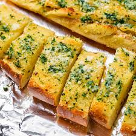

Garlic Bread

This is THE recipe for a greatest food of all time, Garlic Bread.
This recipe describes the ingredients and the steps needed to
construct a delicious garlic bread! Garlic Breads goes great with
alot of things, but when it's delicious on it's own, the symphony of
dinner sings!
Ingredients
- Foccacia Bread
- Parmesan Cheese
- Butter
- Minced Garlic
- Romano Cheese
Steps to Make!
- Cut Foccacia bread loaf in half.
- Melt butter and baste the top of the bread slices with it.
- Grate the cheese, and cover the top of the buttered
bread slice with it.
- Sprinkle the minced garlic on top of the bread, and spread it evenly.
- Put in the oven for 10 minutes at 400 degrees!
- Enjoy!